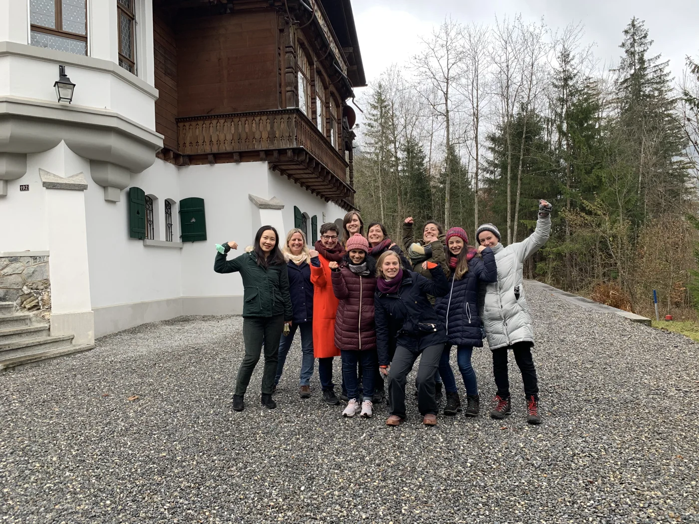
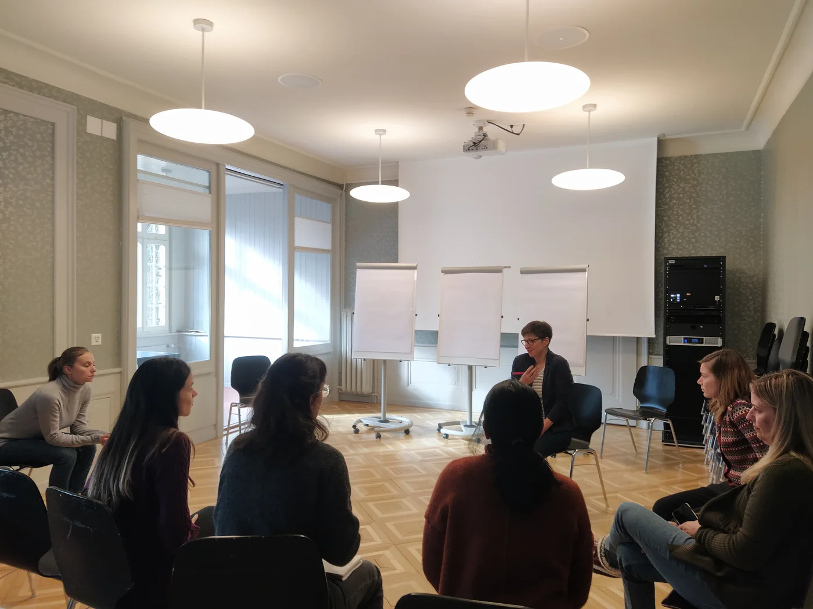
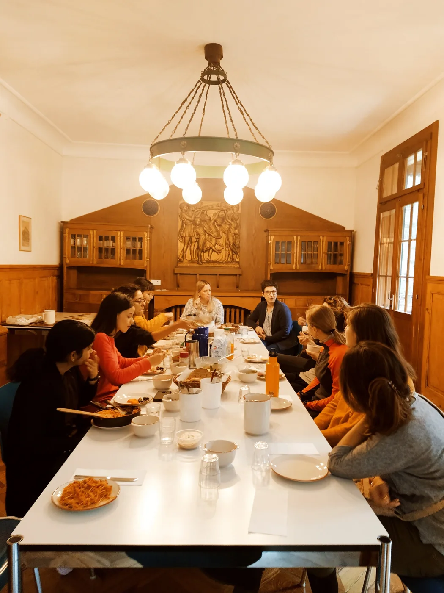
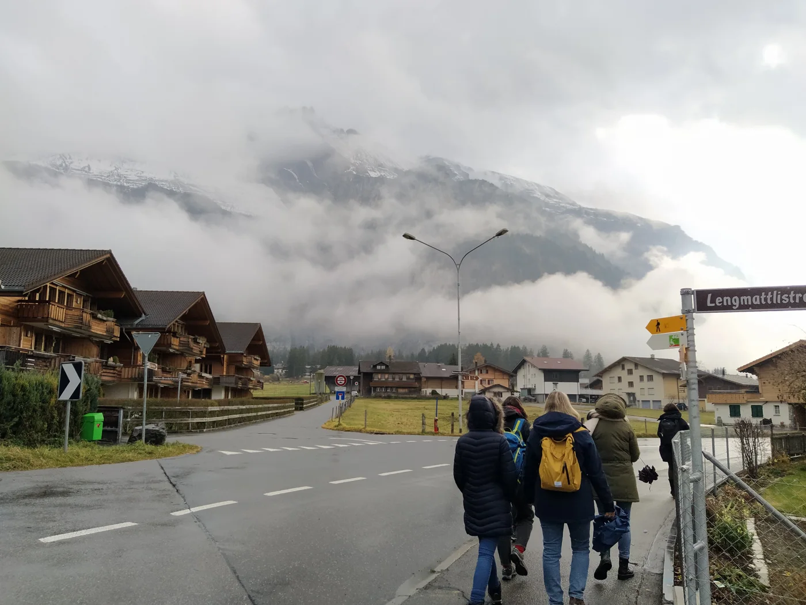

Event report
500WS retreat in Kandersteg November 2021
We enjoyed two days together getting to know each other, hiking, cooking, and spending long nights talking and having fun.
Moreover, we followed an excellent workshop by the coach Tanja Wranick, learning about negotiation skills, emotions management, and power games. Our very own Claudia Kasper also organized a series of joyful theater improvisation exercises!
We thank the University of Bern for the funding of the Promotion Fund Grant that helped us to make it possible!
A memorable experience is stored in everyone's heart and we hope to repeat it in 2022!



